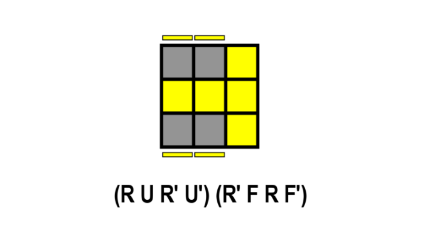

Étape 3 : Orientation de la dernière couche
L'étape OLL consiste à orienter toutes les pièces de la dernière couche de manière à ce que la face supérieure soit d'une seule couleur.
Instructions:
- Identifier le cas OLL : Regardez la dernière couche et identifiez le motif des autocollants.
- Appliquer l'algorithme : Utilisez l'algorithme correspondant pour orienter toutes les pièces correctement.
Ressources: Liste des 57 cas OLL et leurs algorithmes. Vidéos explicatives.
ceci est une video qui vous permet de faire vos oll de maniere plus simple sans apprendre toute les formul
https://www.youtube.com/watch?v=GhmYBgLoQQg 